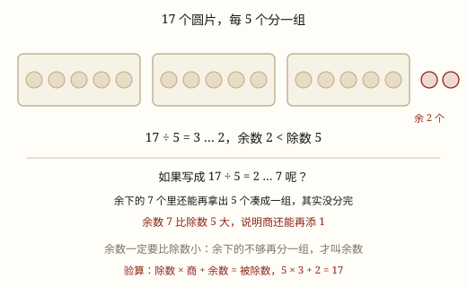
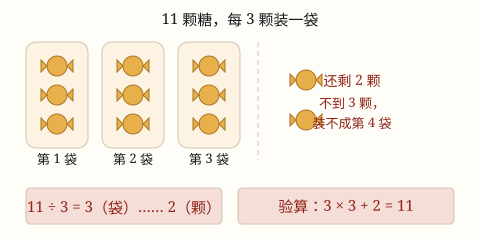

有余数除法的意义与余数的性质
分到不能再分，剩下不够再分一份的叫余数：11 颗糖每 3 颗一袋，装满 3 袋还剩 2 颗，写作 11÷3=3……2。
| 所属主题 | 数的运算 |
|---|---|
| 所属模块 | 数与代数 |
| 课标学段 | 第一学段（1~2年级） |
| 前置知识 | 除法的初步认识与用口诀求商、除法的初步认识与用口诀求商 |
| 核心素养 | 运算能力模型意识数感推理意识 |
教材定位
人民教育出版社《2024年版》
对应二下第 1 单元「有余数的除法」：有余数除法的意义与竖式。；对应二下第 1 单元「有余数的除法」：余数一定比除数小、进一法与去尾法。
课标要求
| 数与代数·数与运算 | 探索乘法和除法的算理与算法，会简单的整数乘除法。 印刷第 18 页 行为动词：掌握 |
|---|---|
| 数与代数·数与运算 | 在具体情境中，了解四则运算的意义，感悟运算之间的关系（例3）。 印刷第 18 页 行为动词：了解 |
说明
11 颗糖，每 3 颗装一袋。一颗一颗地装：装满第 1 袋用掉 3 颗，第 2 袋 3 颗，第 3 袋 3 颗，一共用掉 9 颗。手里还剩 2 颗——想再装一袋还差 1 颗，装不成了。像这种分到不能再分、剩下的不够再分一份的除法，就叫有余数的除法。
写成 11 ÷ 3 = 3 \cdots\cdots 2，读作「11 除以 3 商 3 余 2」。等号后面的 3 是商（装满了几袋），六个点后面的 2 是余数（剩下几个）。这六个点叫省略号，在有余数的除法里专门用来隔开商和余数。
商和余数的单位常常不一样。这一题商是「3 袋」，余数是「2 颗」。写答语时要分开写：装了 3 袋，还剩 2 颗。
验算还是用乘法：装满的 3 袋一共 3 × 3 = 9 颗，加上剩下的 2 颗，9 + 2 = 11，正好是原来的 11 颗。只要对不上，就说明这一题算错了。
和二年级上册学的除法比一比：那时候每道题都正好分完（12 ÷ 3 = 4），这学期多了一个「分不完」的情况。多出来的那几个，就是余数。
（余数一定比除数小）
有余数的除法里有一条硬规矩：余数一定比除数小。写成 余数 < 除数。除数是 5，余数只能是 1、2、3、4，绝不会是 5，更不会是 6、7。
这句话不是老师规定的，是「分到不能再分」这句话自己带出来的。除数是 5 表示「一份要 5 个」，只要剩下的还够 5 个，你就还能再装一袋、再分一组；等剩下不到 5 个了，才真的停手。所以停下来时，剩下的必然比 5 小。
顺着这条规矩还能推出两条有用的结论：余数最大是「除数 − 1」（除数 5 时最大余 4），余数最小是 1（有余数的时候；正好分完就没有余数，也就不用写）。
这条规矩也是检查算式的最好办法。算完先问自己一句：余数比除数小吗？只要余数大于或等于除数，不用对答案就知道算错了——商写小了。
使用场景
分糖果、装袋子：17 颗糖每 5 颗装一袋，能装几袋、还剩几颗。
班级分小组：38 人做游戏，每 6 人一组，能分几组、还剩几人。
买东西算钱：带 20 元买 6 元一本的笔记本，能买几本、还剩几元。
布置教室：50 面彩旗每 8 面扎一束，能扎几束、还剩几面。
摆书上架：44 本绘本每 7 本放一层，能放满几层、还剩几本。
（余数一定比除数小）
检查算式对不对：算出 26 ÷ 6 = 3 \cdots\cdots 8，一眼看出 8 比 6 大，肯定是错的。
试商的时候定商：38 ÷ 5，想口诀五七三十五，商 7 余 3；想成商 6 就余 8，8 比 5 大，说明商该往上调。
猜余数可能是几：除数是 8，余数只可能是 1 到 7，一共 7 种，做题时可以在心里先圈出范围。
装箱、装袋、分组：不管分的是什么，「不够一份」这几个剩下的，永远比一份的个数少。
注意点
先想清楚「一份是几个」。题目说「每 3 颗一袋」，除数就是 3；说「平均分成 3 份」，除数也是 3。除数放错，商和余数就全错了。
商和余数的单位要分开写。问「能装几袋、还剩几颗」，答案就是「3 袋，剩 2 颗」。写成「3 颗剩 2 袋」就把两个数的意思弄反了。
余数一定要比除数小。算出来余数比除数大，说明你还没分完，得再多分一份（下一课专门讲这件事）。
有余数时不能把余数丢掉不写。11 ÷ 3 只写「= 3」是不完整的，剩下的 2 颗也是分的结果，必须写进算式。
写答语时想想余数要不要「再加一个」。装袋问「能装满几袋」就答 3 袋；问「至少要几个袋子才能全装走」就要答 4 袋——多出来的那一袋装的就是剩下的 2 颗。
（余数一定比除数小）
余数等于除数也不行。除数是 6、余数正好是 6，说明剩下的还能再凑一份，商要加 1，余数变成 0。
「余数最大是除数」是错的，最大是除数减 1。除数是 6 时余数最大是 5。
商写小了，余数就会「吃掉」一份。看到余数比除数大，别去改余数，要把商加 1，余数自然就减掉了一个除数。
验算要查两件事：一是 商 × 除数 + 余数 = 被除数，二是 余数 < 除数。两条都过才算对，只查第一条会漏掉商写小的情况。
商和余数别写反。17 ÷ 5 = 3 \cdots\cdots 2，不是 2 \cdots\cdots 3。

图 1：余下的不够再分一组，才配叫余数
为什么是这样

图 1：装满 3 袋后手里只剩 2 颗，凑不齐一袋，这 2 颗就是余数
算理推导
拿 11 颗糖，按「每 3 颗一袋」去装。装第 1 袋：拿走 3 颗，手里剩 8 颗。装第 2 袋：拿走 3 颗，剩 5 颗。装第 3 袋：拿走 3 颗，剩 2 颗。这一步一步的减法，就是 11 - 3 = 8，8 - 3 = 5，5 - 3 = 2。
现在手里剩 2 颗，还想再装一袋吗？一袋要 3 颗，2 < 3，不够。这时候手停下来——不是不想装，是装不了了。除法到这里就结束，剩下的 2 颗就是余数。
为什么这 2 颗不能算成「一份」？因为「一份」的标准是 3 颗，是题目定好的。2 颗凑不出一份，所以它既不能进袋子的个数里，也不能被丢掉，只能单独记在算式后面——这就是「余数」这个名字的来历：余下来的数。
数一数一共装了几袋：3 袋。所以算式里等号后面先写 3，再写「……2」。商是「装满的份数」，余数是「剩下不够一份的个数」，两个数说的根本不是同一件事，所以单位也不同。
最后用乘法把分出去的和剩下的拼回去：3 × 3 + 2 = 9 + 2 = 11。拼回来正好等于原来的 11 颗，说明一分不多、一分不少。这个「拼回去」的办法，就是有余数除法的验算。
（余数一定比除数小）
从头想一遍「有余数」是怎么来的：分东西时一份一份地拿走，一直拿到手里剩下的不够再凑一份才停。这个「不够」两个字，就是整条规矩的来源。
假设有人说 17 ÷ 5 = 2 \cdots\cdots 7。我们用小棒摆一摆：先摆 2 份，每份 5 根，用掉 10 根；手里还剩 7 根。这时候你低头一看——7 根里面明明还能再拿出 5 根摆成一份！
那就接着摆：第 3 份拿走 5 根，手里剩 7 - 5 = 2 根。现在只剩 2 根，5 根一份凑不出来了，才真的停。所以正确结果是 17 ÷ 5 = 3 \cdots\cdots 2。
看清这一步发生了什么：商加了 1，同时余数减了一个除数（7 - 5 = 2）。只要余数还比除数大，这个动作就能再做一次；做到余下的不够减了为止，最后剩下的那个数一定比除数小。
所以「余数比除数大」不是一种答案，而是一个没做完的动作。它等于在对你喊：还能再分一份，你停早了！反过来，只要余数比除数小，就代表这份真的凑不出来了，除法可以收工。
再看边界：除数是 5，剩下 5 根会怎样？正好凑一份，商加 1、余数变 0——也就是正好分完。剩下 6 根还是能凑一份余 1。一路推下来，能留下来的余数只有 1、2、3、4 这四种，最大就是 4，也就是除数减 1。
最后把两条检查连起来用：商 × 除数 + 余数 = 被除数 保证「没多数也没少数」，余数 < 除数 保证「确实分完了」。少查哪一条，都可能把错的算式当成对的。
动手实验
抓 11 颗糖（或者 11 颗棋子、11 颗花生），真的装一装。准备几个小纸袋，按「每 3 颗一袋」往里放：放 3 颗、扎一袋；再放 3 颗、扎一袋；再放 3 颗、扎一袋；最后手里剩 2 颗，试一试还能不能扎出第 4 袋。把结果填进 11 ÷ 3 = \_\_ \cdots\cdots \_\_。然后再换两个数试试：11 颗每 4 颗一袋、11 颗每 2 颗一袋，看看余数分别是几，比一比余数和除数谁大。 （余数一定比除数小） 准备 20 根小棒（或 20 颗棋子），每 4 根摆一个正方形，把 13、14、15、16 根分别试一遍，每试一次就把「摆了几个、剩几根」填进表里。你会看到余数依次是 1、2、3、0——余数一次也没有到过 4。最后再做一次「故意做错」的：15 根只摆 2 个正方形，看看手里是不是剩 7 根，然后从 7 根里再拿 4 根摆一个，体会「余数比除数大」是怎么被消掉的。
按场景的例题
例 1（场景：饮食与配比） 把糖果装进小纸袋
有 11 颗糖，每 3 颗装一袋，能装满几袋？还剩几颗？
解：一袋一袋地装：11 - 3 = 8，8 - 3 = 5，5 - 3 = 2，装了 3 袋后剩 2 颗。剩下的 2 颗比 3 颗少，装不成一袋。写成 11 ÷ 3 = 3 \cdots\cdots 2。验算：3 × 3 + 2 = 11。
答：能装满 3 袋，还剩 2 颗。
例 2（场景：校园生活） 体育课上班级分小组做游戏
二（1）班有 38 人，每 6 人分一个小组，能分成几个小组？还剩几人？
解：想 6 的乘法口诀：六六三十六，6 × 6 = 36，比 38 小；六七四十二，6 × 7 = 42，超过 38 了。所以商是 6，余数 38 - 36 = 2。写成 38 ÷ 6 = 6 \cdots\cdots 2。
答：能分成 6 个小组，还剩 2 人。
例 3（场景：购物消费） 用储蓄罐里的零花钱买笔记本
一本笔记本 6 元，小宇带了 20 元，最多能买几本？还剩几元？
解：每 6 元算一份：6 × 3 = 18，20 - 18 = 2。余下的 2 元不够再买一本。写成 20 ÷ 6 = 3 \cdots\cdots 2。
答：最多能买 3 本，还剩 2 元。
例 4（场景：校园生活） 运动会前把彩旗扎成束
体育室有 50 面彩旗，每 8 面扎成一束，能扎几束？还剩几面？这些彩旗至少要准备几束才能全部扎完？
解：想 8 的口诀：六八四十八，8 × 6 = 48，50 - 48 = 2，所以 50 ÷ 8 = 6 \cdots\cdots 2。扎了 6 束后还剩 2 面，这 2 面也要单独扎一束，所以一共要 6 + 1 = 7 束。
答：能扎满 6 束，还剩 2 面；要全部扎完需要 7 束。
例 5（场景：校园生活） 班级分小组做值日
二（2）班有 26 人，每 6 人分一个值日小组，能分几组？还剩几人？小力写成 26 ÷ 6 = 3 \cdots\cdots 8，对吗？
解：先看余数：8 比除数 6 大，说明剩下的 8 人里还能再凑一个 6 人小组，所以这个答案是错的。想口诀四六二十四，6 × 4 = 24，26 - 24 = 2，余数 2 比 6 小，这才分完了。
答：不对。正确的是 26 ÷ 6 = 4 \cdots\cdots 2，能分 4 组，还剩 2 人。
例 6（场景：金融理财） 把储蓄罐里的钱换成整十的纸钞
储蓄罐里有 30 枚 1 元硬币，每 8 元换一张整钱，最多能换几张？还剩几元？余数可能是 8 吗？
解：想口诀三八二十四，8 × 3 = 24，30 - 24 = 6，写成 30 ÷ 8 = 3 \cdots\cdots 6，余数 6 比 8 小，正好。余数不可能是 8：真剩 8 元就又能换一张了。除数是 8 时，余数只可能是 1 到 7。
答：最多换 3 张，还剩 6 元；余数不可能是 8，最大是 7。
例 7（场景：饮食与配比） 把糖果装进礼袋分给同学
有 38 颗糖，每 5 颗装一袋，能装满几袋？还剩几颗？
解：想 5 的口诀：五七三十五，5 × 7 = 35，比 38 小；五八四十，5 × 8 = 40，超过 38 了，所以商是 7。余数 38 - 35 = 3，3 比 5 小，不能再装。验算：7 × 5 + 3 = 38。
答：能装满 7 袋，还剩 3 颗。
例 8（场景：校园生活） 运动会上把号码牌穿成串
57 个号码牌，每 8 个穿成一串，能穿几串？还剩几个？
解：想口诀七八五十六，8 × 7 = 56，57 - 56 = 1，写成 57 ÷ 8 = 7 \cdots\cdots 1。余数 1 比除数 8 小，符合规矩；验算 7 × 8 + 1 = 57。
答：能穿 7 串，还剩 1 个。
常用推论
有余数的除法算式：被除数 ÷ 除数 = 商 …… 余数，其中余数一定比除数小。
商 × 除数 + 余数 = 被除数，这是验算有余数除法的固定办法。
被除数 ÷ 除数 = 商；没有余数时 商 × 除数 = 被除数，有余数时才多加一个余数。
有余数时，商是「装满的份数」、余数是「剩下不够一份的个数」，两者单位往往不同。
余数 < 除数；反过来，只要余数 ≥ 除数，就把商加 1、余数减去除数，一直减到余数比除数小为止。
除数是几，余数最大就是几减 1；有余数时余数最小是 1。除数是 6 时余数只能是 1~5，最大是 5。
商 × 除数 + 余数 = 被除数（余数 < 除数），这是检查有余数除法的完整验算式。
一道题如果算成「余数 = 0」，说明正好分完，这时写成普通的除法 被除数 ÷ 除数 = 商，不用写省略号。
易错点
错11 颗糖每 3 颗装一袋，写成 11 ÷ 3 = 2 \cdots\cdots 3。
为什么错把商和余数写反了。商说的是「装满几袋」，这里装满的是 3 袋；3 颗是「一份有几个」，不是剩下的个数。
正确11 ÷ 3 = 3 \cdots\cdots 2，装 3 袋剩 2 颗。用 3 × 3 + 2 = 11 一验算就能发现写反了（2 × 3 + 3 = 9 ≠q 11）。
错算完 11 ÷ 3 = 3 \cdots\cdots 2，答成「装了 3 颗，还剩 2 袋」。
为什么错商和余数的单位跟着谁走没想清楚。3 是袋子的个数，2 是糖的个数，位置一换意思就反了。
正确商的单位看「分成了几份」：3 袋；余数的单位就是被分东西的单位：2 颗。
错20 元买 6 元一本的笔记本，写成 20 ÷ 6 = 3，把剩下的 2 元丢掉不写。
为什么错没分完却当成正好分完。剩下的 2 元虽然买不了笔记本，但它也是分的结果，不写算式就不完整。
正确写成 20 ÷ 6 = 3 \cdots\cdots 2，答：买 3 本，还剩 2 元。
错38 人每 6 人一组，写成 38 ÷ 6 = 5 \cdots\cdots 8。
为什么错试商时商写小了，剩下的 8 人其实还能再凑一个 6 人小组，说明还没分完。
正确商改成 6：38 ÷ 6 = 6 \cdots\cdots 2，余下的 2 人不够 6 人，才是真的不能再分。
错17 个气球每 5 个扎一束，写成 17 ÷ 5 = 2 \cdots\cdots 7。
为什么错余数 7 比除数 5 还大，说明剩下的 7 个里还能再扎出一束，等于没分完。
正确商加 1、余数减去除数：17 ÷ 5 = 3 \cdots\cdots 2，扎 3 束剩 2 个。
错「除数是 6，余数最大是 6。」
为什么错余数等于除数，说明剩下的正好还能再分一份，那就该商加 1、余数变 0，不是「有余数」。
正确余数必须比除数小，除数是 6 时余数最大是 5。
错26 人每 6 人一组，算成 26 ÷ 6 = 3 \cdots\cdots 8，发现余数大了以后直接把余数改成 5 交上去。
为什么错余数不能自己改小。多了 8 人不是「改成 5 人」，而是这 8 人里要再分出一组——动的是商，不是余数。
正确商加 1 变成 4 组，剩下 26 - 24 = 2 人，写成 26 ÷ 6 = 4 \cdots\cdots 2。
错检查 38 ÷ 5 = 7 \cdots\cdots 3 时只算了 7 × 5 + 3 = 38，就断定一定正确。
为什么错这条只说明「数没多数也没少数」，管不了「有没有分完」。38 ÷ 5 = 6 \cdots\cdots 8 也满足 6 × 5 + 8 = 38，可它明显没分完。
正确两条一起查：商 × 除数 + 余数 = 被除数，并且 余数 < 除数。
直观理解
把有余数的除法想成排队上缆车：每辆车正好坐 3 个人，11 个人排着队上车，第 1 辆坐满走了，第 2 辆坐满走了，第 3 辆也坐满走了，最后剩 2 个人站在站台上。他们算不算「一辆车」？不算——他们没坐满，只能眼巴巴等下一趟。这 2 个人就是余数：人还是那些人，只是凑不齐一辆车，所以既不能算进「走了几辆车」，也不能假装他们不存在。 （余数一定比除数小） 余数就像买完东西后兜里剩下的零钱。一本本子 8 元，你买完以后兜里可能剩 1 元、剩 5 元、剩 7 元，但绝不可能还剩 10 元——真剩 10 元，你肯定还能再买一本，那这笔买卖就没做完。所以「剩下的钱一定比一个本子的价钱少」不是规定，是「你不会白站着不买」这件事自己带来的结果。余数比除数小，道理一模一样。
分到不能再分才停下，剩下的几个叫余数；商是装满的份，余是剩下的个，乘回去加余数，正好是总数。 （余数一定比除数小） 余数要比除数小，大了说明没分好；商加一，余减除，一直减到小为止。